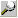

Remarque préliminaire : les lignes de propriété affichant un nom de traitement disposent d'un menu contextuel (voir la rubrique Menus contextuels de la fenêtre Propriétés). 
Lorsque vous cliquez sur ce type de paramètre, vous passez en mode saisie normale et un bouton
a) Saisie manuelle du nom
Entrée d'un nom
L'appel au traitement est simplement configuré : aucune action n'est effectuée sur le code source des traitements.
Vous pouvez saisir le nom d'un traitement déjà codé ou déjà configuré par ailleurs.
La sélection d'un nom déjà existant est également possible par le choix Sélectionner un traitement du menu contextuel.
Effacement du nom
L'appel au traitement est simplement annulé : aucune action n'est effectuée sur le code source des traitements.
Cette opération est également réalisée par le choix Annuler l'appel au traitement du menu contextuel.
b) Clic sur le bouton zoom
Cas 1 : le nom du traitement n'est pas encore renseigné.
Un nom est automatiquement généré ainsi que le squelette du code source correspondant. La fenêtre Mdi des traitements du masque est activée et le curseur est positionné sur le traitement créé (remarque : dans un masque de surcharge, la génération a lieu bien entendu dans le code de surcharge).
Remarque : si le même traitement existe déjà dans le masque, un nouveau nom est généré avec un nouveau code source. Si vous souhaitez reprendre un traitement existant, il ne faut pas cliquer sur le bouton zoom mais utiliser le choix Sélectionner un traitement du menu contextuel (ou saisir son nom à la main).
Cas 2 : le nom du traitement est déjà renseigné mais le code source correspondant n'existe pas (ni dans la base ni dans la surcharge).
Le squelette d'un traitement de ce nom est généré dans le code source des traitements. La fenêtre Mdi des traitements du masque est activée et le curseur est positionné sur le traitement créé (remarque : dans un masque de surcharge, la génération a lieu bien entendu dans le code de surcharge).
La génération du squelette du code est également réalisée par le choix Générer le traitement du menu contextuel.
Cas 3 : le nom du traitement est déjà renseigné et le code source correspondant déjà créé (dans la base et/ou la surcharge).
La fenêtre Mdi des traitements du masque est activée et le curseur est positionné sur ce traitement.
L'édition du code source du traitement est également possible par le choix Editer le traitement du menu contextuel.
Remarques concernant les masques de surcharge :
Si le code du traitement de base ET du traitement de surcharge existent, c'est le traitement de surcharge qui est édité.
L'édition du traitement de surcharge est également possible par le choix Editer le traitement de la surcharge du menu contextuel.
Utilisez le choix Editer le traitement de la base du menu contextuel pour éditer le traitement de base.
Si le code du traitement de base existe mais pas celui du traitement de surcharge, le traitement de base est édité.
Utilisez le choix Générer le traitement dans la surcharge du menu contextuel pour générer un squelette du traitement de surcharge.
Exemples :
Vous insérez la donnée CodeArticle dans la page 1 du masque et vous voulez lui affecter un traitement "Après saisie" : cliquez dans la zone de saisie à droite de la ligne de propriété "Traitement après" (famille "Traitements") puis sur le bouton zoom. Xwin génère un nom pour ce traitement, génère le squelette du code source correspondant et passe directement en édition du code source nouvellement créé.
Vous insérez cette même donnée CodeArticle dans la page 2 du masque et vous voulez lui affecter un traitement "Après saisie" différent : opérez exactement de la même manière que précédemment.
Vous insérez à nouveau cette même donnée CodeArticle dans la page 3 du masque mais cette fois, vous voulez lui affecter un traitement "Après saisie" identique à l'un des traitements précédents : cliquez droit dans la zone de saisie à droite de la ligne de propriété "Traitement après", activez le choix Sélectionner un traitement du menu contextuel et sélectionnez le nom de traitement désiré.
Vous voulez créer un traitement de surcharge "Après saisie" pour la donnée CodeArticle : cliquez droit dans la zone de saisie à droite de la ligne de propriété "Traitement après" et activez le choix Générer le traitement dans la surcharge du menu contextuel.
Vous voulez consulter le traitement de base "Après saisie" de la donnée CodeArticle : cliquez droit dans la zone de saisie à droite de la ligne de propriété "Traitement après" et activez le choix Editer le traitement de la base du menu contextuel.
Vous voulez modifier le traitement de surcharge "Après saisie" de la donnée CodeArticle : cliquez droit dans la zone de saisie à droite de la ligne de propriété "Traitement après" et activez le choix Editer le traitement de la surcharge du menu contextuel OU cliquez gauche dans cette même zone puis cliquez sur le bouton zoom.